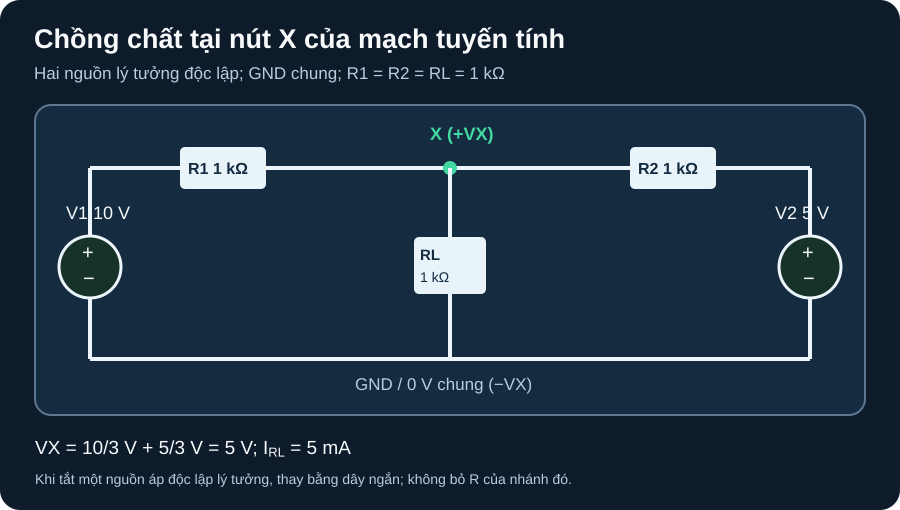

Chồng Chất & Nguồn Phụ Thuộc
Tách đóng góp của từng nguồn độc lập mà không đánh mất cấu trúc tuyến tính của mạch.
- Giải một mạch DC tuyến tính hai nguồn bằng KCL trực tiếp và bằng hai đóng góp chồng chất; kết quả phải khớp.
- Triệt nguồn áp/dòng lý tưởng độc lập đúng cách, nhưng giữ điện trở và nguồn phụ thuộc.
- Phân biệt đại lượng được cộng (điện áp/dòng) với công suất tính từ đáp ứng tổng.
- Đặt biến điều khiển nguồn phụ thuộc theo điện áp giữa hai nút xác định, kiểm điều kiện nghiệm duy nhất.
Tiếp sau A10: phương pháp nút giải đồng thời mọi nguồn. Chồng chất dùng tính tuyến tính để giải từng nguồn độc lập rồi cộng điện áp hoặc dòng cùng chiều quy chiếu. MIT 6.002 Lecture 3, trang PDF 6–13, mục “Linearity/Superposition” nêu nguyên tắc tuyến tính, nguồn độc lập và cách triệt nguồn lý tưởng. Bài này dùng ví dụ do giáo trình tự dựng, không sao chép sơ đồ MIT.
1. Quy tắc và miền áp dụng
| Phần tử khi xét một nguồn khác | Thao tác đúng | Vì sao |
|---|---|---|
| Nguồn áp lý tưởng độc lập | Đặt áp bằng 0 V → thay bằng dây ngắn. | Điện áp hai đầu bằng 0; điện trở nối tiếp bên ngoài vẫn còn. |
| Nguồn dòng lý tưởng độc lập | Đặt dòng bằng 0 A → để hở. | Không có dòng đi qua nhánh nguồn lý tưởng; phần tử mắc nhánh khác không bị xóa. |
| Nguồn phụ thuộc | Giữ nguyên. Giá trị tiếp tục do biến điều khiển trong mạch đang xét quyết định. | Nó là quan hệ cấu thành của mạch, không phải một kích thích độc lập để tùy ý triệt. |
| Nguồn thật có trở trong | Triệt nguồn lý tưởng bên trong; giữ trở trong theo model đã chọn. | Short/open toàn bộ thiết bị thật có thể thay đổi điện trở nhìn vào. |
MIT 6.002 Lecture 9a transcript, trang PDF 2–3 nói rõ nguồn phụ thuộc ở lại khi lần lượt tắt các nguồn độc lập. MIT 6.200, Dependent Sources, trang PDF 4 và 8 mở rộng lý do này trong mô hình nguồn điều khiển. Diode đang dẫn/cắt theo điện áp là phần tử phi tuyến; không dùng công thức chồng chất trực tiếp cho mạch có diode như một mạng tuyến tính duy nhất.
2. Ví dụ giải độc lập: hai nguồn cùng tác động nút X

VX=V(X)−V(GND).Mô tả mạch bằng chữ
Nguồn V1 10 V có cực dương ở đầu trái R1 1 kΩ, cực âm về GND. R1 nối đến nút X. Nguồn V2 5 V có cực dương ở đầu phải R2 1 kΩ, cực âm cùng GND; R2 cũng nối đến X. Từ X, RL 1 kΩ về GND. Lấy GND làm 0 V, dấu dương của VX tại X. Dòng tải quy ước từ X qua RL xuống GND.
- Giải trực tiếp để có mốc kiểm: KCL tại X, với điện trở tính kΩ và dòng tính mA:
(VX−10)/1+(VX−5)/1+VX/1=0, nên3VX−15=0,VX=5 V. Tải nhậnIL=VX/1 kΩ=5 mA. - Chỉ V1 hoạt động: đặt V2=0 V và thay nguồn V2 lý tưởng bằng dây ngắn; R2 1 kΩ vẫn nối từ X về GND. KCL
(VX1−10)+VX1+VX1=0sau nhân 1 kΩ, nênVX1=10/3 V≈3,333 V,IL1≈3,333 mA. - Chỉ V2 hoạt động: đặt V1=0 V, giữ R1 nối X về GND. KCL
VX2+(VX2−5)+VX2=0, nênVX2=5/3 V≈1,667 V,IL2≈1,667 mA. - Cộng đúng đại lượng:
VX=10/3+5/3=5 VvàIL=3,333+1,667=5 mA. Công suất tải phải tính từ tổng:PL=VX²/RL=25/1000=25 mW. Nếu cộng công suất hai nghiệm riêng,(10/3)²/1k+(5/3)²/1k≈13,89 mW, sai vì thiếu hạng tương tác trong bình phương tổng.
3. Nguồn phụ thuộc vẫn ở lại: biến thể có lời giải
Thêm vào cùng nút X một nguồn dòng phụ thuộc lý tưởng từ GND hướng lên X, giá trị Idep=g·VX, trong đó VX=V(X)−V(GND), g=0,5 mS. Đây là một mạch biến thể trên giấy, không phải linh kiện đo thật. Nó giúp học quy tắc mà không cần chọn op-amp/transistor cụ thể. Nguồn điều khiển có chiều bơm dòng vào X, nên KCL tại X là (VX−V1)/1k+(VX−V2)/1k+VX/1k−gVX=0.
Nhân phương trình với 1 kΩ: (3−0,5)VX=V1+V2. Với 10 V và 5 V, VX=15/2,5=6 V. Khi chỉ V1 hoạt động, vẫn giữ gVX: VX1=10/2,5=4 V. Khi chỉ V2 hoạt động, VX2=5/2,5=2 V; tổng 6 V. Nếu triệt nguồn phụ thuộc ở mỗi bước, ta sẽ tính sai về 5 V. Hệ số tổng 3−g·1kΩ phải khác 0 để nghiệm nút duy nhất trong model này; ví dụ g=0,5 mS thỏa điều kiện. MIT 6.200, *Dependent Sources*, trang PDF 4–6 là nguồn cho cách giữ quan hệ điều khiển trong phép phân tích, không xác nhận một nguồn vật lý đã được lắp.
4. Hoạt động tái lập: ba cột, một kết quả
Chép topology A11-1 và đặt GND, VX, chiều IL. Lập ba cột:
V1=10,V2=5;V1=10,V2=0;V1=0,V2=5. Mỗi cột giải KCL(VX−V1)+(VX−V2)+VX=0theo kΩ/mA. Số kỳ vọng ở bảng dưới.Thêm dòng
gVXtừ GND lên X vớig=0,5 mS. Thay mẫu số3bằng2,5trong cả ba cột; không triệt nguồn phụ thuộc. Kiểm trực tiếp tổng 4+2=6 V và dòng tải tương ứng.Nếu thật sự dùng SPICE, tự viết/lưu ba netlist DC operating point với nguồn áp lý tưởng, ba điện trở và nguồn dòng điều khiển (trong biến thể); ghi simulator/version, node, chiều nguồn điều khiển, kết quả và sai khác. Hoạt động giấy ở đây chỉ có giá trị kỳ vọng, chưa là kết quả chạy SPICE.
| Trường hợp | Không có nguồn phụ thuộc: VX / IL | Có g=0,5 mS hướng GND→X: VX / IL |
|---|---|---|
| Cả V1 và V2 | 5 V / 5 mA | 6 V / 6 mA |
| Chỉ V1, V2=0 | 10/3 V / 10/3 mA | 4 V / 4 mA |
| Chỉ V2, V1=0 | 5/3 V / 5/3 mA | 2 V / 2 mA |
Cổng phần cứng: ví dụ dùng nguồn lý tưởng và điện trở lý tưởng, chưa có nguồn thật, giới hạn dòng, công suất, mạch tạo nguồn phụ thuộc, BOM, PCB hoặc người duyệt. Không suy từ phép tính rằng hai nguồn điện áp vật lý có thể nối theo sơ đồ mà không có đặc tính nguồn/trở trong được kiểm. Khi có phần cứng, trước tiên phải khóa model nguồn, mức áp và giới hạn tải rồi duyệt mạch thấp áp cách ly.
Giữ ba điện trở 1 kΩ và GND của A11-1, đổi V1 thành 6 V, V2 vẫn 5 V. Không có nguồn phụ thuộc trong câu 1–2.
g=0,5 mS, tìm VX mới. Nguồn phụ thuộc có bị triệt khi xét từng nguồn độc lập không?1. Khi chỉ 6 V: VX1=6/3=2 V. Khi chỉ 5 V: VX2=5/3≈1,667 V. Tổng VX=11/3≈3,667 V; KCL trực tiếp (VX−6)+(VX−5)+VX=0 cho 3VX=11.
2. PL=VX²/1k=(11/3)²/1000≈0,01344 W=13,44 mW. Tổng công suất riêng 2²/1k+(5/3)²/1k≈6,78 mW thiếu hạng chéo, nên sai.
3. (3−0,5)VX=6+5=11, do đó VX=4,4 V. Nguồn phụ thuộc vẫn giữ trong cả hai phép xét, mỗi lần giá trị nó theo VX của chính nghiệm riêng.
Rubric 4 điểm: 1 điểm topology/GND và triệt nguồn độc lập đúng; 1 điểm phương trình, dấu và đơn vị; 1 điểm 3,667 V, 13,44 mW, 4,4 V; 1 điểm giới hạn chồng công suất và quy tắc giữ nguồn phụ thuộc.